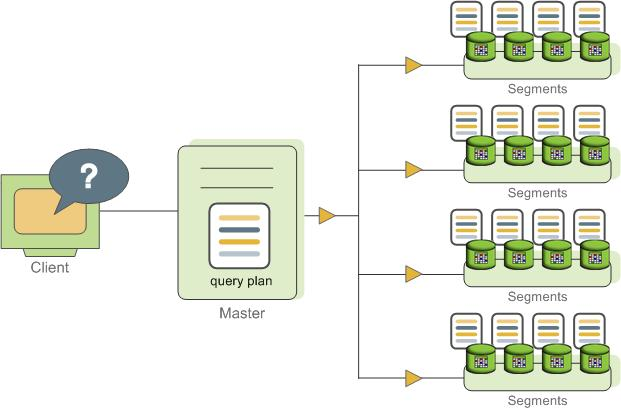
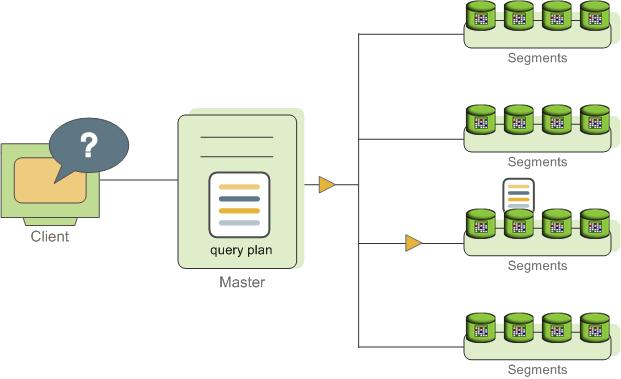
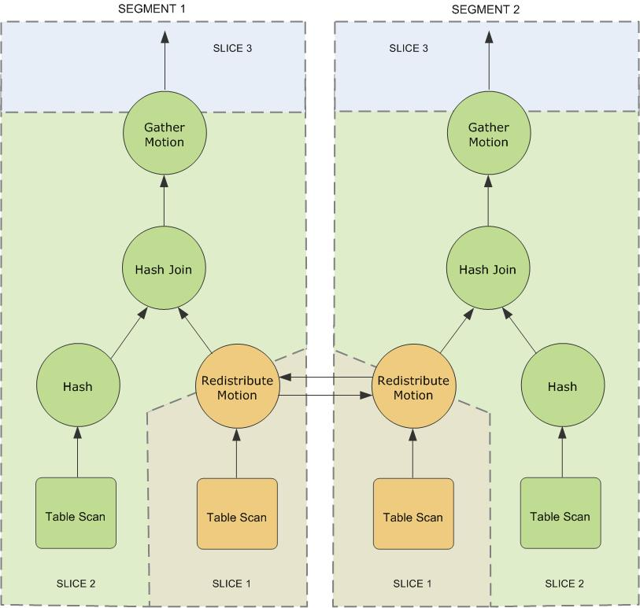
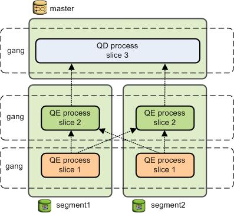

About SynxDB Query Processing
This topic provides an overview of how SynxDB processes queries. Understanding this process can be useful when writing and tuning queries.
Users issue queries to SynxDB as they would to any database management system. They connect to the database instance on the SynxDB master host using a client application such as psql and submit SQL statements.
Understanding Query Planning and Dispatch
The master receives, parses, and optimizes the query. The resulting query plan is either parallel or targeted. The master dispatches parallel query plans to all segments, as shown in Figure 1. The master dispatches targeted query plans to a single segment, as shown in Figure 2. Each segment is responsible for running local database operations on its own set of data.
Most database operations—such as table scans, joins, aggregations, and sorts—run across all segments in parallel. Each operation is performed on a segment database independent of the data stored in the other segment databases.

Certain queries may access only data on a single segment, such as single-row INSERT, UPDATE, DELETE, or SELECT operations or queries that filter on the table distribution key column(s). In queries such as these, the query plan is not dispatched to all segments, but is targeted at the segment that contains the affected or relevant row(s).

Understanding SynxDB Query Plans
A query plan is the set of operations SynxDB will perform to produce the answer to a query. Each node or step in the plan represents a database operation such as a table scan, join, aggregation, or sort. Plans are read and run from bottom to top.
In addition to common database operations such as table scans, joins, and so on, SynxDB has an additional operation type called motion. A motion operation involves moving tuples between the segments during query processing. Note that not every query requires a motion. For example, a targeted query plan does not require data to move across the interconnect.
To achieve maximum parallelism during query runtime, SynxDB divides the work of the query plan into slices. A slice is a portion of the plan that segments can work on independently. A query plan is sliced wherever a motion operation occurs in the plan, with one slice on each side of the motion.
For example, consider the following simple query involving a join between two tables:
SELECT customer, amount
FROM sales JOIN customer USING (cust_id)
WHERE dateCol = '04-30-2016';
Figure 3 shows the query plan. Each segment receives a copy of the query plan and works on it in parallel.
The query plan for this example has a redistribute motion that moves tuples between the segments to complete the join. The redistribute motion is necessary because the customer table is distributed across the segments by cust_id, but the sales table is distributed across the segments by sale_id. To perform the join, the sales tuples must be redistributed by cust_id. The plan is sliced on either side of the redistribute motion, creating slice 1 and slice 2.
This query plan has another type of motion operation called a gather motion. A gather motion is when the segments send results back up to the master for presentation to the client. Because a query plan is always sliced wherever a motion occurs, this plan also has an implicit slice at the very top of the plan (slice 3). Not all query plans involve a gather motion. For example, a CREATE TABLE x AS SELECT... statement would not have a gather motion because tuples are sent to the newly created table, not to the master.

Understanding Parallel Query Execution
SynxDB creates a number of database processes to handle the work of a query. On the master, the query worker process is called the query dispatcher (QD). The QD is responsible for creating and dispatching the query plan. It also accumulates and presents the final results. On the segments, a query worker process is called a query executor (QE). A QE is responsible for completing its portion of work and communicating its intermediate results to the other worker processes.
There is at least one worker process assigned to each slice of the query plan. A worker process works on its assigned portion of the query plan independently. During query runtime, each segment will have a number of processes working on the query in parallel.
Related processes that are working on the same slice of the query plan but on different segments are called gangs. As a portion of work is completed, tuples flow up the query plan from one gang of processes to the next. This inter-process communication between the segments is referred to as the interconnect component of SynxDB.
Figure 4 shows the query worker processes on the master and two segment instances for the query plan illustrated in Figure 3.
